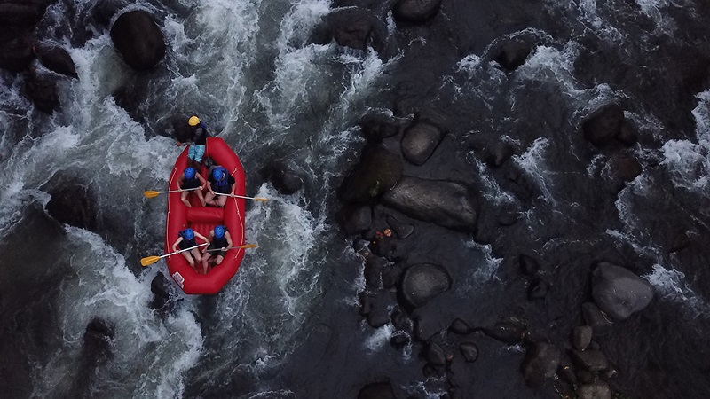

White Water Rafting Company

The Experience: Plunging out of the high Andean cloud forests into the lush piedmont of Barinas state, the Río Sinigüis offers an unrelenting, adrenaline-fueled ride. The adventure kicks off in a dense rainforest canopy where guides help you suit up and review rapid classifications. Instantly upon pushing off, you are thrown into continuous, technical rapids that require sharp teamwork to navigate around massive boulders and deep hydraulic holes. After a grueling, high-energy 4-hour run, you are rewarded with a spectacular riverside lunch and relaxation at a traditional base camp in La Acequia.

The Experience: Often voted one of the most beautiful rivers in the world, the Pacuare slices through pristine, primary rainforest teeming with tropical wildlife and cascading waterfalls. Rafters paddle through continuous, splashy waves and steep drops while looking up at emerald canyon walls. The trip includes calm pools that allow you to take in the breathtaking scenery—from darting toucans to hidden hanging gardens. You’ll also pull off the river to enjoy a gourmet picnic beside a pristine cascading waterfall before taking on the final technical runs.

The Experience: Originating in the glaciated peaks of the Andes Mountains, is renowned for its chaotic, brilliantly turquoise water. This is an expedition for thrill-seekers, featuring massive waves, challenging drops, and heavy turbulent sections. Rafters clad in full dry suits battle iconic rapids with legendary names. Between the roaring whitewater, you are surrounded by jaw-dropping, snow-capped alpine vistas and steep, majestic canyon walls.